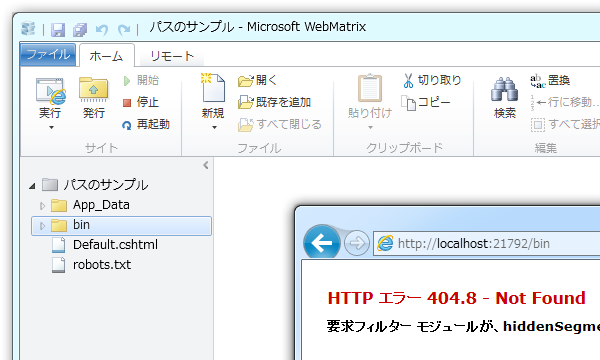
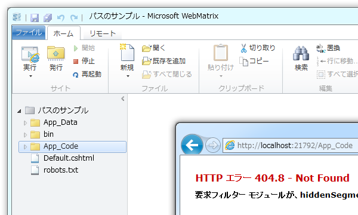
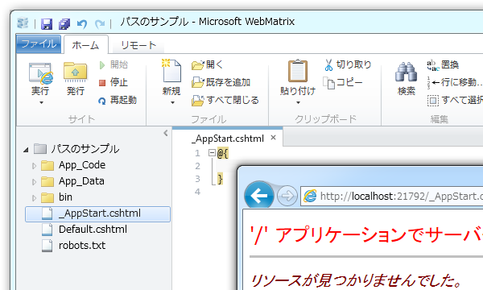
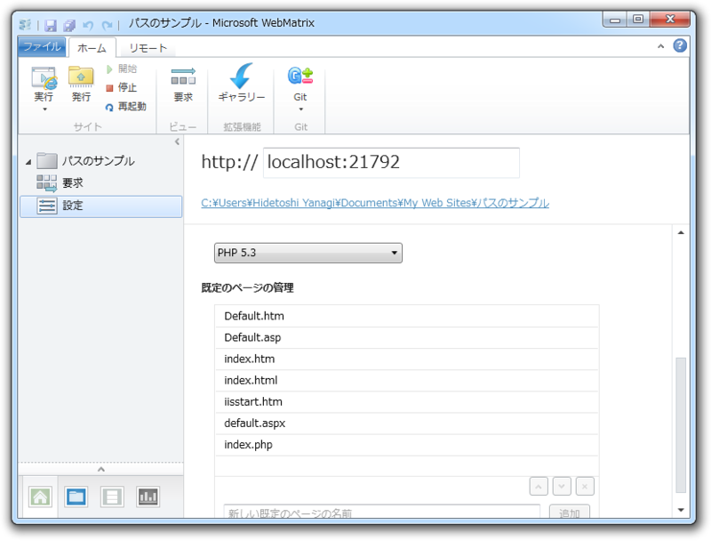
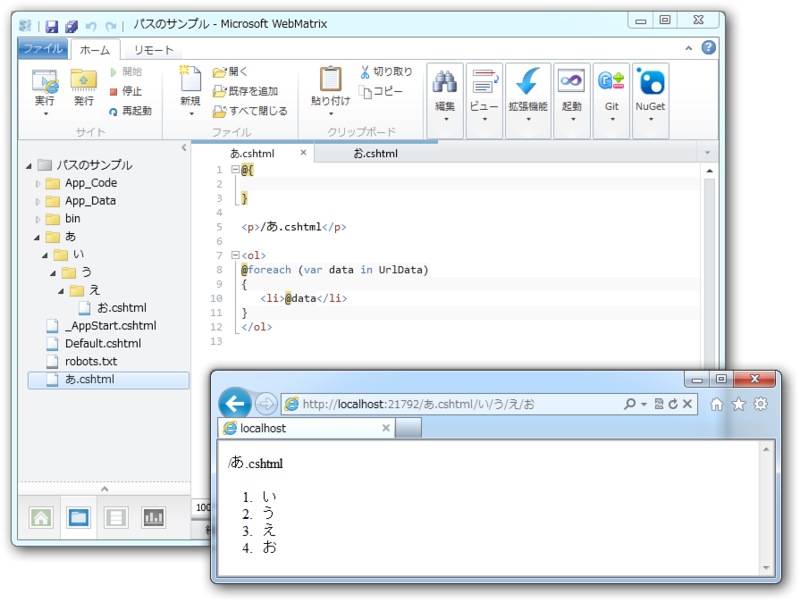
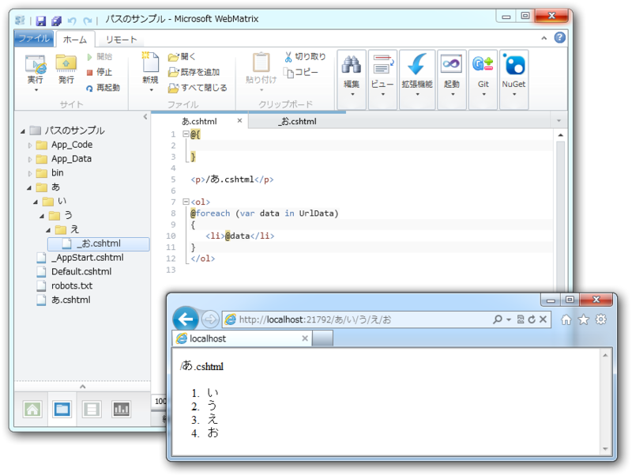

WebMatrix のルーティング
公開日：
保護されたファイル・フォルダ
一部の特殊な意味を持つファイルやフォルダには、Webブラウザーからアクセスできない。逆に言えば、外部からアクセスされては困るファイルやフォルダは、特定のフォルダに格納したり、ファイル名を規約に従ってつければいい。
bin にはアクセスできない

bin にはコンパイルされたアセンブリが格納されているので、当然アクセスが禁止されている。
App_Data / App_Code にはアクセスできない

- App_Data：アプリケーションのデータを格納（データベースなど）
- App_Code：アプリケーションのソースコードを格納（ヘルパーなど）
外からみえたら困るので、やっぱりアクセスが禁止されている。
名前が「_」から始まるファイルにはアクセスできない

- _AppStart.cshcml：アプリケーションが起動するとき一度だけ実行される（グローバル変数の初期化、Web サービスの API キー格納など）
- _PageStart.cshtml：配置されたフォルダ以下にあるページが表示されるごとに実行される（レイアウトの指定やキャッシュコントロール、アクセス制御など）
正直なところ _PageStart.cshtml でアクセス制御ができるのは知らなかったかも。今度使っちゃおう。
@{
Response.CacheControl = "no-cache";
if (!WebSecurity.IsAuthenticated) {
Response.Redirect("~/Account/Login");
}
}
そのほか、レイアウトファイル（たとえば“_Layout.cshtml”）や部分ビュー（たとえば“_Partial.cshtml”）も、外部に公開する必要はないので名前の先頭に「_」をつけることが多い。また、一時的に Web ページを非公開にする場合にも、リネームだけで対応できるので便利。ちなみに、コードからはちゃんとアクセスできるのでご安心を。
名前の解決
いくつかのルールはあるが、あまり難しくはない。工夫次第では URL をクール＆クリーンに保つことができる。
静的な解決
まずは、存在するファイル・フォルダへのアクセスの規則を確認する。
拡張子ありのファイルアクセス
あまり使わないが CSHTML (Razor C#) ファイルも“index.html”のように拡張子まで指定してアクセスできる。
ディレクトリへのアクセス

“index.html”などが表示される。優先順位は［サイト］－［設定］で変更できる。
動的な解決 ―― UrlData[]

/あ.cshtml/い/う/え/お
→ UrlData[] { "い", "う", "え", "お" }の「あ.cshtml」以降のパラメータを、 UrlDate[] 配列で受け取ることができる。

さらに、「お.cshtml」をリネームして「/あ/い/う/え/お.cshtml」による名前解決を無効にすれば、「あ.cshtml」の拡張子を省略することも可能。つまり、
/あ/い/う/え/お
→ UrlData[] { "い", "う", "え", "お" }が得られる。これを利用すれば、 WebMatrix でも URL を動的に扱える。ちなみに、クエリ文字列（ /?foo=bar&hoge=hauhau など）は Request.QueryString で受け取ることができる。
*1:HTML ファイルなどは、拡張子を省くことができないようだ